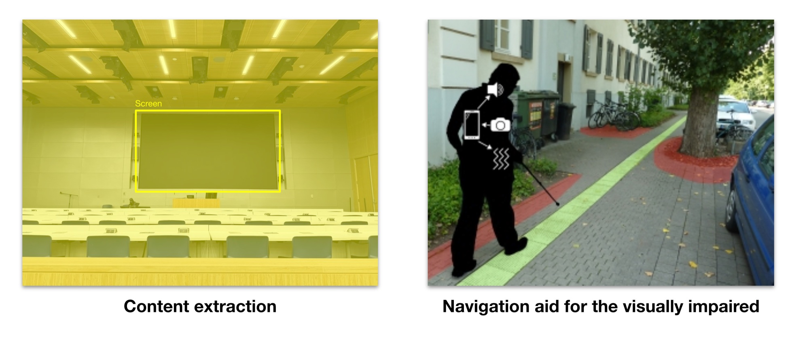
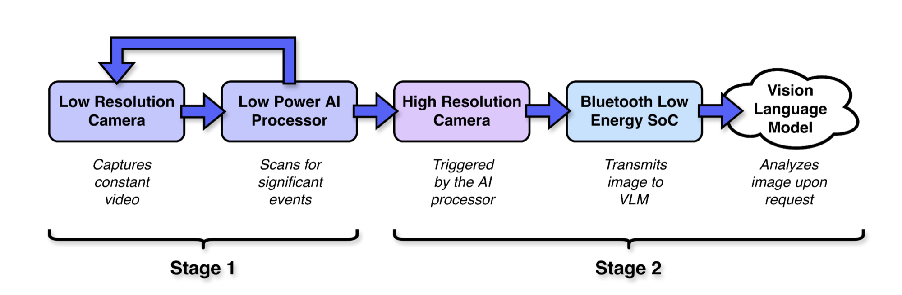
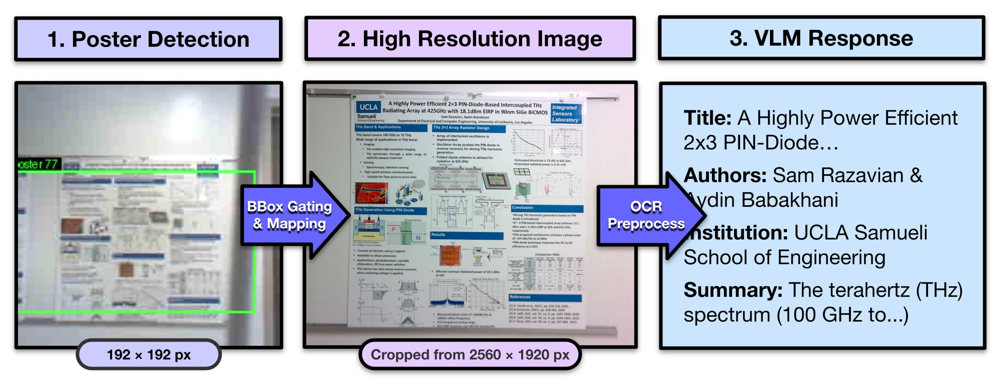
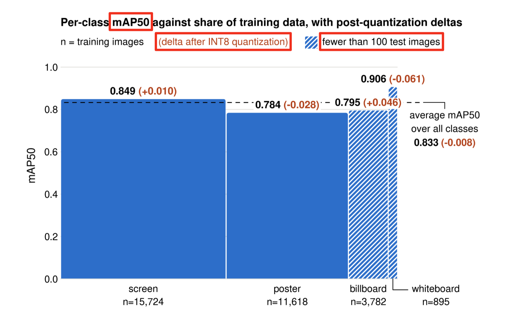
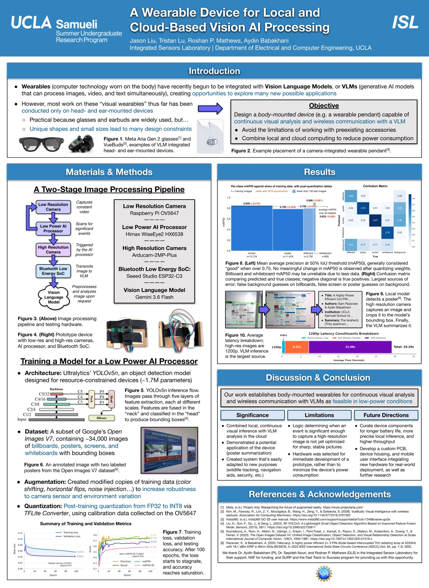

Completed · Jun – Aug 2026
Dual-camera edge-AI wearable.
Local detection on a low-power AI processor, with cloud scene understanding only when it’s worth it.
Outcome. A working prototype, finished during the summer research program. It detects posters, screens, billboards, and whiteboards on-device, then captures a high-resolution crop of the target and sends it over BLE for a vision-language model to describe.

Streaming video from a wearable is expensive.
A body-worn camera that streams high-resolution frames to the cloud spends most of its energy and bandwidth on frames that contain nothing useful. A wearable has little room for a battery, and BLE has limited throughput.
The goal was to understand scenes with a vision-language model, but to use the radio and the cloud only when there is something worth describing.

Two cameras, two stages.


What I did.
- Built the dual-camera pipeline. The Himax WiseEye 2 detects continuously at low resolution, and the ESP32-S3 with an OV5640 captures at high resolution and transfers the image over BLE.
- Trained a YOLOv5n detector (about 1.7 M parameters) in PyTorch on Open Images V7, then quantized it to INT8, shrinking it to about 1.7 MB so it fits on the Himax WE2 processor.
- Calibrated the cross-camera perspective with an OpenCV homography, so boxes detected at low resolution map onto the OV5640 frame.
- Tuned exposure, gain, and dynamic cropping so only the relevant region is transmitted, keeping BLE payloads small.
- Ported an ArduCAM OV2640 SPI burst driver (8 MHz) to Zephyr with the nRF Connect SDK, then measured the energy to send one image over BLE on an nRF52840 versus over Wi-Fi on an ESP32 with a Power Profiler Kit II.
Spend energy only where it matters.
Quantize the model to fit the edge processor.
The detector had to run on the Himax WE2 itself. Quantizing YOLOv5n to INT8 brought it to about 1.7 MB, and average mAP50 changed by only −0.008.
Split the work between local and cloud.
Low-resolution detection runs on-device all the time because it is cheap. High-resolution capture and VLM inference happen only after a target is stable, which saves energy and bandwidth.
Require a stable target before triggering.
A single detection isn’t enough. The trigger fires when a target appears in four of six detection results, which filters out one-frame false positives before any expensive capture.
Send a crop, not a frame.
The calibrated mapping turns a 192 × 192 detection box into a crop of the 2560 × 1920 frame, so the radio carries only the region the VLM needs.
What the prototype showed.
Measured on hardwarePower Profiler Kit II, OV2640 camera with an 8 MHz SPI burst driver ported to Zephyr and the nRF Connect SDK. Sending an image over BLE took about 6.5× less energy than Wi-Fi, which supports using BLE for the wearable’s image link.


When the telemetry disagreed with the device.
At one point the reported stable-detection count said the trigger should fire, but the device wasn’t firing. The cause wasn’t the detector or the rule: the build flashed on the device still contained hidden vetoes.
The lesson was about process more than code. Before interpreting telemetry, confirm which build is actually running on the hardware.
State at the end of the program.
Worked
- End-to-end demo: detect, capture, crop, BLE, VLM description
- BLE measured at 0.37 J per image versus 2.41 J over Wi-Fi
- Final hardware integrated in the enclosure
Not verified
- A Grove I²C check after later firmware changes